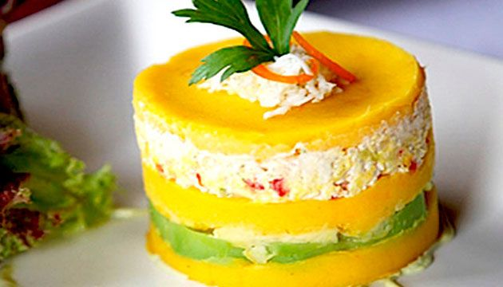
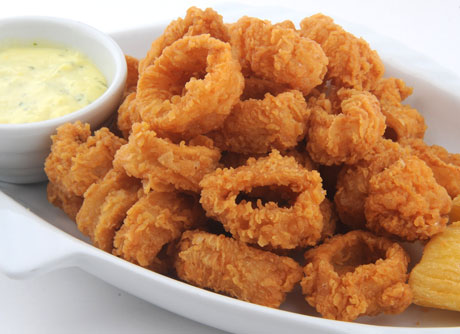

Cabaña Marina
El Sabor Marino
Restaurante Marino
Av. Fontana 777
cabanamarina2020@gmail.com
Teléfono
Entradas
Choritos a la Chalaca
Es un plato elaborado con choros cocidos, cebolla, y tomates picados.

Causa rellena
Es un plato que está hecho con papa amarilla, limon, huevo cocido y aceitunas.

Tequeños
El Tequeño es una preparación hecha a base de harina de trigo frita, rellena de queso blanco o entre otros rellenos.
Menús
Arroz con mariscos
Es un plato típico preparado con arroz, maricos, tomate, ají amarillo, conchas.

Ceviche
Es el plato bandera del Perú. Lo preparamos con pescado, cebolla, choclo, lechuga, leche de tigre y/o papa o camote.

Chicharron de calamar
Un plato hecho con chicharrones de calamar frito.
Bebidas
Chicha Morada
Refresco muy conocido en el Perú que se prepara con maiz morado, limón, azucar, agua y canela.
Limonada Frozen
Una bebida refrescante preparada con limón, agua, hielo, huevo.
Bebidas gaseosas
Coca cola o Inka kola
x